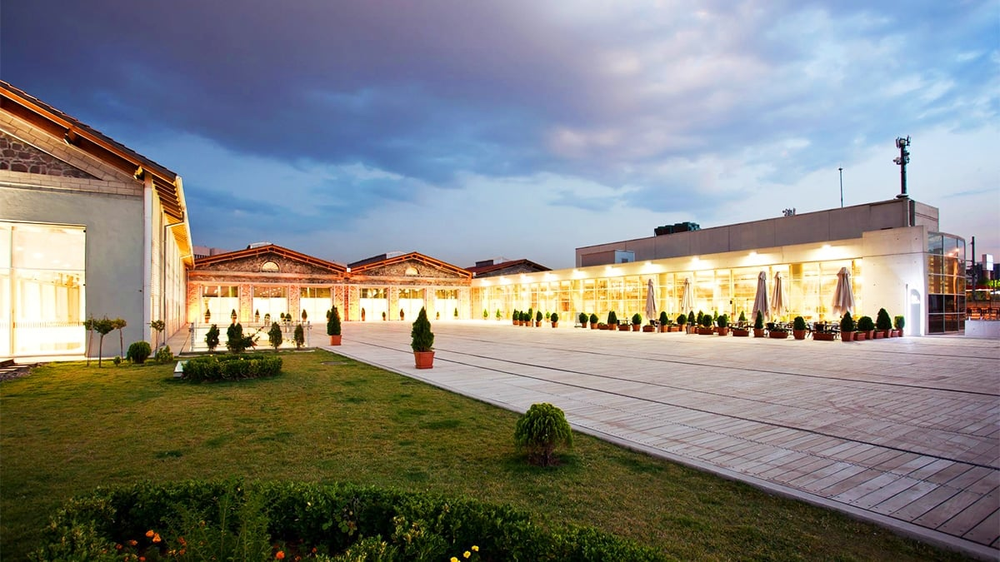
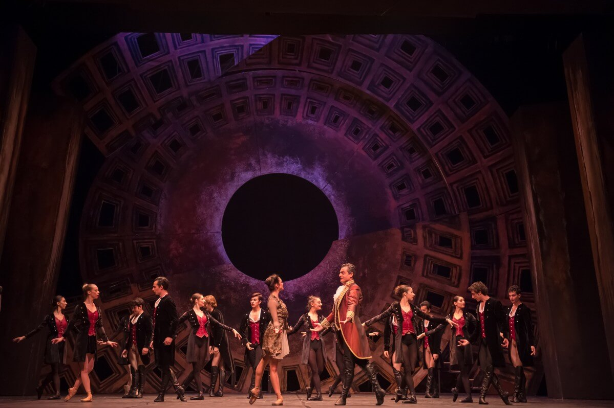
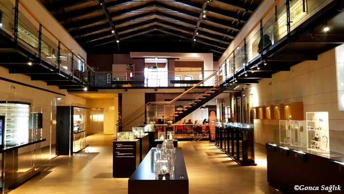
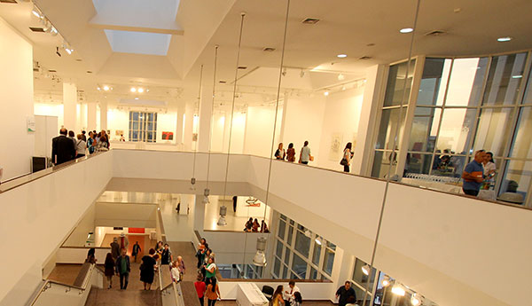

Modern ve çağdaş sanat sergilerine ev sahipliği yapan CerModern, Ankara'nın sanat dünyasının kalbinde yer alır.
Adres: Altınsoy Cd. No:3, Sıhhiye/Ankara
Ziyaret Saatleri: Salı – Pazar 10:00 – 18:00
Giriş: Ücretli (Tam: 60 TL)

Opera, bale ve konserlerin sahnelendiği bu tarihi bina, Türkiye’nin kültürel hayatında önemli bir yere sahiptir.
Adres: Atatürk Blv. No:20, Opera/Ankara
Etkinlik Saatleri: Programlara göre değişken
Giriş: Ücretli (Biletli giriş)

Arkeolojik eserlerin yanı sıra resim, heykel ve çağdaş sanat sergileriyle kültür ve sanatseverleri buluşturur.
Adres: Kale Mahallesi, Altındağ/Ankara
Ziyaret Saatleri: Pazartesi hariç her gün 10:00 – 18:00
Giriş: Ücretli (Tam: 40 TL)

Konser, tiyatro, sergi ve çeşitli etkinliklere ev sahipliği yapan, Ankara’nın sanat rotalarından biridir.
Adres: Kennedy Cd. No:4, Çankaya/Ankara
Ziyaret Saatleri: Etkinlik günlerine göre değişir
Giriş: Çoğunlukla ücretsiz